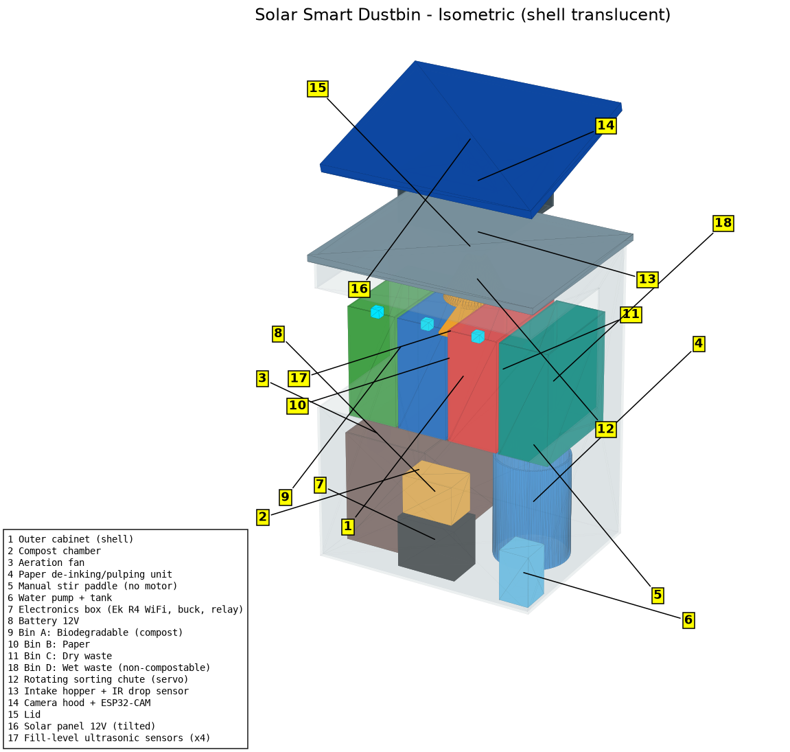
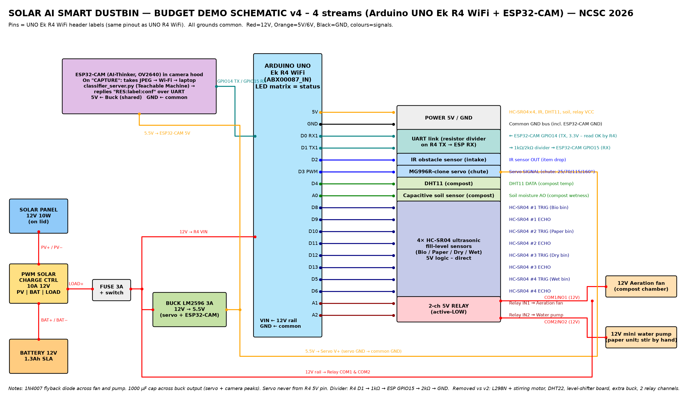

0
Delhi households didn't segregate
In a large household survey, about 93% said they did not separate waste at home; ~58% said collectors mix it anyway, so the effort felt pointless.
Source: Luthra 2021 ↗ [3]National Children's Science Congress · Science & Innovation for Sustainability
Project Phoenix
A solar-powered smart waste sorter that sees each item, decides whether it is biodegradable, paper, dry or wet waste, and routes it — feeding a compost chamber and a paper-pulping unit.
Illustrative loop · waiting for an item…
Chapter 1 · Where our peel begins
India's Solid Waste Management Rules, 2016 (Rule 4) require every waste generator to segregate and store waste in three separate streams — biodegradable, non-biodegradable and domestic hazardous — before handing it over [2]. Our sorter goes further, splitting non-biodegradable waste into paper, dry and wet. Studies show the household habit has not caught up.
In a large household survey, about 93% said they did not separate waste at home; ~58% said collectors mix it anyway, so the effort felt pointless.
Source: Luthra 2021 ↗ [3]An audit of 4,754 residents across 8 wards found only 24% segregated at source, and 62% were unsure what goes where.
Source: Manuja et al. 2020 ↗ [4]The city reports source-segregation levels above 70% — our study tests what that looks like inside real homes in one neighbourhood.
Source: PIB 21 Jan 2026 ↗ [5]If people find sorting confusing and pointless, can a machine that sorts for them close the gap?
Chapters 2–5 · Into the machine
Chapter 6 · The six steps it took
An IR beam across the intake detects the item and wakes the system.
The ESP32-CAM in the lit hood takes a photo on the Arduino's “CAPTURE” command.
A Teachable Machine model on a laptop replies over Wi-Fi: bio, paper, dry or wet + confidence.
The servo chute swings to 25°, 70°, 115° or 160°. Unsure (<60%) → dry compartment for a manual check.
Biodegradable feeds a fan-aerated compost chamber; paper goes to a pump-fed pulping tub; dry and wet wait for collection.
Every decision, photo and compost reading is logged — data for our study.
Chapter 7 · Rising again
Like a phoenix from ash, two of the four streams are turned back into something useful — the loop at the heart of the project's name.
Chapter 8 · The machine it passed through
Drag to orbit. Slide to explode. Hover a part to find it. (CadQuery model, rendered live with three.js.)

Chapter 9 · What powered its trip
Power Signal / data

Chapter 10 · What it cost
Approximate Indian retail prices, Oct 2026 — under the ₹6,000 budget.
Official Made-in-India Arduino, 12×8 LED matrix shows status.
OV2640 camera, sends JPEG over Wi-Fi.
PWM controller + 12 V 1.3 Ah battery.
Biodegradable · Paper · Dry · Wet, each with its own HC-SR04 fill sensor.
millis() timers — sorting never pauses while the fan or pump runs.
Chapter 11 · Proving it works
Households in our neighbourhood show low willingness to segregate waste themselves, but will accept automated sorting.
Results will be added here after the survey and trial. No outcome data is shown yet.
Chapter 12 · Why one peel matters
India's Lifestyle for Environment movement — making mindful use and disposal an everyday habit [7].
Responsible consumption & production — target 12.5: substantially reduce waste generation through prevention, reduction, recycling and reuse [8].
References
Every statistic on this page comes from one of these documents. Click to verify.